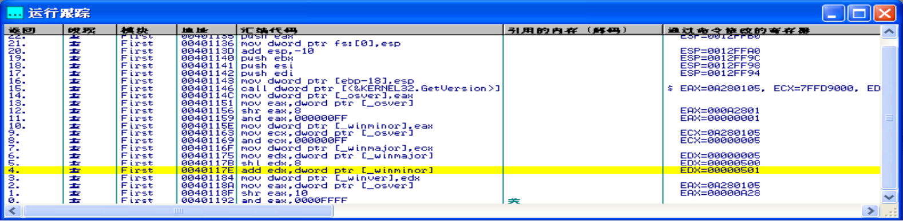

PE文件格式
文件格式
可执行文件之所以可以被操作系统加载且运行，是因为它们遵循相同的规范。PE（Portable Executable）是Win32平台下可执行文件遵守的数据格式。常见的可执行文件（如“*.exe”文件和“*.dll”文件）都是典型的PE文件。
一个可执行文件不光包含了二进制机器码，还会自带许多其他信息，如字符串、菜单、图标、位图、字体等。PE文件格式规定了所有的这些信息在可执行文件中如何组织。在程序被执行时，操作系统会按照PE文件格式的约定去相应的地方准确地定位各种类型的资源，并分别装入内存的不同区域。
PE文件格式把可执行文件分成若干个数据节（section），不同的资源被存放在不同的节中。一个典型的PE文件中包含的节如下：
- rsrc
存放程序的资源，如图标、菜单等。
- text
由编译器产生，存放着二进制的机器代码，也是我们反汇编和调试的对象。
- idata
可执行文件所使用的动态链接库等外来函数与文件的信息, 即输入表
- data
初始化的数据块，如宏定义、全局变量、静态变量等。
如果是正常编译出的标准PE文件，其节信息往往是大致相同的。但这些section的名字只是为了方便人的记忆与使用，使用Microsoft Visual C++中的编译指示符：
#pragma data_seg()
可以把代码中的任意部分编译到PE的任意节中，节名也可以自己定义，如果可执行文件经过了“加壳”处理，PE的节信息就会变得非常“古怪”。在Crack和反病毒分析中需要经常处理这类古怪的PE文件。
加壳
全称应该是可执行程序资源压缩，是保护文件的常用手段。 加壳过的程序可以直接运行，但是不能查看源代码。要经过脱壳才可以查看源代码。
加壳其实是利用特殊的算法，对EXE、DLL文件里的代码、资源进行压缩、加密。类似WINZIP 的效果，只不过这个压缩之后的文件，可以独立运行。附加在原程序上的解压程序通过Windows加载器载入内存后，先于原始程序执行，得到控制权，执行过程中对原始程序进行解密、还原，还原完成后再把控制权交还给原始程序，执行原来的代码部分。
加上外壳后，原始程序代码在磁盘文件中一般是以加密后的形式存在，只在执行时在内存中还原，这样就可以比较有效地防止对程序文件的非法修改和静态反编译
加壳工具通常分为压缩壳和加密壳两类。
- 压缩壳的特点是减小软件体积大小，加密保护不是重点。
- 加密壳种类比较多，不同的壳侧重点不同，一些壳单纯保护程序，另一些壳提供额外的功能，如提供注册机制、使用次数、时间限制等。
虚拟内存
Windows安全模式
为了防止用户程序访问并篡改操作系统的关键部分，Windows使用了2种处理器存取模式：用户模式和内核模式。用户程序运行在用户模式，而操作系统代码（如系统服务和设备驱动程序）则运行在内核模式。在内核模式下程序可以访问所有的内存和硬件，并使用所有的处理器指令。操作系统程序比用户程序有更高的权限，使得系统设计者可以确保用户程序不会意外的破坏系统的稳定性。
虚拟内存
Windows的内存可以被分为两个层面：物理内存和虚拟内存。其中，物理内存非常复杂，需要进入Windows内核级别ring0才能看到。通常，在用户模式下，用调试器看到的内存地址都是虚拟内存。
用户编制程序时使用的地址称为虚拟地址或逻辑地址，其对应的存储空间称为虚拟内存或逻辑地址空间；而计算机物理内存的访问地址则称为实地址或物理地址，其对应的存储空间称为物理存储空间或主存空间。程序进行虚地址到实地址转换的过程称为程序的再定位。
进程空间
在Windows系统中，在运行PE文件时，操作系统会自动加载该文件到内存，并为其映射出4GB的虚拟存储空间，然后继续运行，这就形成了所谓的进程空间。用户的PE文件被操作系统加载进内存后，PE对应的进程支配了自己独立的4GB虚拟空间。在这个空间中定位的地址称为虚拟内存地址（Virtual Address，VA）。
到了现在，系统运行在X64架构的硬件上，可访问的内存也突破了以前4GB的限制，但是独立的进程拥有独立的虚拟地址空间的内存管理机制还在沿用。
PE文件和虚拟内存的映射
在调试漏洞时，可能经常需要做这样两种操作：
- 静态反汇编工具看到的PE文件中某条指令的位置是相对于磁盘文件而言的，即所谓的文件偏移，我们可能还需要知道这条指令在内存中所处的位置，即虚拟内存地址。
- 反之，在调试时看到的某条指令的地址是虚拟内存地址，我们也经常需要回到PE文件中找到这条指令对应的机器码。
基本概念
相对虚拟地址(RVA)
相对虚拟地址是内存地址相对于映射基址的偏移量。
虚拟内存地址(VA)
PE文件中的指令被装入内存后的地址。
文件偏移地址(File Offset)
数据在PE文件中的地址叫文件偏移地址，这是文件在磁盘上存放时相对于文件开头的偏移。
装载基址(Image Base)
PE装入内存时的基地址。默认情况下，EXE文件在内存中的基地址是0x00400000，DLL文件是0x10000000。
这些位置可以通过修改编译选项更改。
映射关系
VA=Image Base+RVA

由于文件数据的存放单位与内存数据存放单位不同而造成一些差异：
- PE文件中的数据按照磁盘数据标准存放，以0x200字节为基本单位进行组织。当一个数据节（section）不足0x200字节时，不足的地方将被0x00填充：当一个数据节超过0x200字节时，下一个0x200块将分配给这个节使用。因此PE数据节的大小永远是0x200的整数倍。
- 当代码装入内存后，将按照内存数据标准存放，并以0x1000字节为基本单位进行组织。类似的，不足将被补全，若超出将分配下一个0x1000为其所用。因此，内存中的节总是0x1000的整数倍。
LordPE
LordPE是一款功能强大的PE文件分析、修改、脱壳软件。LordPE是查看PE格式文件信息的首选工具，并且可以修改相关信息。


VOffset是RVA（相对虚拟地址），ROffset是文件偏移。也就是，在系统进程中，代码（.text节）将被加载到0x400000+0x11000=0x411000的虚拟地址中（装载基址+RVA）。而在文件中，可以使用二进制文件打开，看到对应的代码在0x1000位置处。
查看导入表信息

导入表在文件里的偏移地址ROffset为0x24000，RVA是0x25000。打开目录表可以看到，可以看到输入表的RVA确实是0x25000。点左侧按钮L可以查看具体输入表里的内容。

IAT表信息
IAT(Import Address Table:输入函数地址表)
每个API函数在对应的进程空间中都有其相应的入口地址。众所周知，操作系统动态库版本的更新，其包含的API函数入口地址通常也会改变。由于入口地址的不确定性，程序在不同的电脑上很有可能会出错，为了解决程序的兼容问题，操作系统就必须提供一些措施来确保程序可以在其他版本的Windows操作系统，以及DLL版本下也能正常运行。这时IAT表就应运而生了。

基于导入表可以定位IAT的具体信息，相关工具可以帮助直接查看IAT表的相关内容。
PEView
直观显示PE文件内容

调试分析工具
OllyDbg
是一种具有可视化界面的 32 位汇编—分析调试器，适合动态调试。 OllyDBG版的发布版本是个ZIP 压缩包，解压就可以使用了。

基本调试方法
OllyDBG 有两种方式来载入程序进行调试
- 一种是点击菜单文件，打开(快捷键是F3)来打开可执行文件进行调试
- 另一种是点击菜单文件，附加到一个己运行的进程上进行调试，要附加的程序必须己运行。

快捷键
- F2设置断点。
- F7单步步入。功能同单步步过(F8)类似，区别是遇到 CALL 等子程序时会进入其中，进入后首先会停留在子程序的第一条指令上。
- F8单步步过。执行一条指令，遇到 CALL 等子程序不进入其代码。
- F4运行到选定位置。
- F9运行
- CTR+F9执行到返回。此命令在执行到一个ret(返回指令)指令时暂停，常用于从系统领空返回到我们调试的程序领空。
- ALT+F9执行到用户代码。可用于从系统领空快速返回到我们调试的程序领空。
跟踪
使用调试功能时通常会碰到在断点处无法定位入口的情况，即无法确定前序执行指令，通过Trace（跟踪）功能可以记录调试过程中执行的指令，用于分析前序执行指令。Trace记录可选择是否记录寄存器的值。
IDA PRO
简称IDA（Interactive Disassembler），是一个世界顶级的交互式反汇编工具，是逆向分析的主流工具。
IDA使用File菜单中的Open选项，可以打开一个计划逆向分析的可执行文件，打开的过程是需要耗费一些时间的。IDA会对可执行文件进行分析。一旦打开成功，会提示你是否进入Proximity view。通常都会点Yes，按默认选项进入。

反汇编窗口
也叫IDA-View窗口，是操作和分析二进制文件的主要工具。
反汇编窗口有三种显示格式：
- 面向文本的列表视图(Text view)
- 基于图形的视图(Graphic View)
- 优化视图(Proximity view)将显示函数及其调用关系
视图间可以切换：在上图的Proximity view视图中，点选一个块，比如_main函数块，在其上点右键，可以看到Text view和Graph view等选项。通过右键可以实现不同视图的切换。
图形视图：将一个函数分解为许多基本块，类似程序流程图类似，生动的显示该函数由一个块到另一个块的控制流程。
如下图所示的_main函数的图形视图：

文本视图：文本视图则呈现一个程序的完整反汇编代码清单（而在图形模式下一次只能显示一个函数），用户只有通过这个窗口才能查看一个二进制文件的数据部分。如下图所示的文本视图：

通常虚拟地址以[区域名称]：[虚拟地址]这种格式显示，如.txt:0040110C0。
实线箭头表示非条件跳转，虚线箭头则表示条件跳转。如果一个跳转将控制权交给程序中的某个地址，这时会使用粗线，出现这类逆向流程，通常表示程序中存在循环。
其它窗口
通过菜单Views，Open subviews可以打开更多的窗口。
Names窗口：列举二进制文件的所有全局名称。名称是指对一个程序虚拟地址的符号描述。 Names窗口显示的名称采用了颜色和字母编码，其编码方案如下：
- F常规函数
- A字符串数据
- L库函数
- I导入的名称，通常为共享库导入的函数名称
- D数据，已命名数据的位置通常表示全局变量

Strings窗口：显示从二进制文件中提取出的字符串，以及每个字符串所在的地址。与双击Names窗口中的名称得到的结果类似，双击Strings窗口中的任何字符串，反汇编窗口将跳转到该字符串所在的地址。将Strings窗口与交叉引用结合，可以迅速定义感兴趣的字符串，并追踪到程序中任何引用该字符串的位置。
Function name窗口：该窗口显示所有的函数。点击函数名称，可以快速导航到反汇编视图中的该函数区域。该窗口中的条目如下：

这一行信息指出：用户可以在二进制文件中虚拟地址为00401040的.text部分中找到_main函数，该函数长度为0x50字节。
Function call窗口：函数调用（Function call）窗口将显示所有函数的调用关系。如下图：

反编译：新版本的IDA增加了反编译功能，加强了分析能力。
在IDA View窗口下制定汇编代码，按快捷键F5，IDA会将当前所在位置的汇编代码编译成C/C++形式的代码，并在Pseudocode窗口中显示，如下图所示。

PE文件代码注入示例
演示内容及实验环境
利用PE文件输入表API实现代码注入：让目标程序运行之前，先运行我们注入的代码，注入的代码将运行PE文件输入表里包含的API。
目标PE文件为Windows XP下的扫雷程序，使用的工具包括OllyDBG和LordPE。
扫雷游戏程序位置：在Windows下找到附件里的扫雷游戏，右键属性可以看到具体文件的位置，即C:\WINDOWS\system32\winmine.exe。
用OllyDBG打开扫雷程序

程序会停下来，自动停下来的这一行代码位置就是程序入口点。可以通过LordPE文件来查看，得知程序入口点的RVA是0x00003E21，同时也可以看到装载基址是0x01000000（扫雷程序是C++语言编写）；也可以通过右侧寄存器EIP的值0x01003E21(VA)可以观察到注释信息里，提示是ModuleEntryPoint。
反汇编区域继续往下翻页，可以看到相关的导入表动态链接库及其相关函数的信息。
在空白代码区编写要注入的代码
在代码区可以找到大量的空白代码区域，如果我们往这里头植入代码，直接修改PE文件相关跳转地址（入口点或特定函数的IAT的跳转地址），就可以实现相关的植入代码的执行。
本实验：演示让扫雷程序运行之前，先运行我们注入的代码，注入的代码将调用PE文件输入表里包含的MessageBox函数，弹出对话框，显示相关信息。
编辑和注入代码
Message函数
1 |
|
- hWnd：消息框所属窗口的句柄，如果为NULL，消息框则不属于任何窗口。
- lpText：字符串指针，所指字符串会在消息框中显示。
- lpCaption：字符串指针，所指字符串将成为消息框的标题。
- uType：消息框的风格（单按钮、多按钮等），NULL代表默认风格。
系统中并不存在真正的MessageBox函数，调用最终都将由系统按照参数中的字符串的类型选择“A”类函数（ASCII）或者“W”类函数（UNICODE）调用，我们使用MessageBoxA.
构造相关字符串
计划注入的代码功能为：弹出对话框，显示“You are Injected!”。
在代码空白区域每一行位置，点鼠标右键，选择 编辑->二进制编辑。

在弹出的编辑界面里，输入ASCII码“PE Inject”，将“保持代码空间大小”去掉选中状态，状态如下：


按快捷键CTRL+A（分析），显示为ASCII码。再加入另一条语句“You are Injected!” 。

上面的每个语句后面都留了一行00。因为，字符串后面是需要结束符0x00的。
构造函数调用的代码
1 |
|
注意，直接双击要修改的当前行，就进入修改汇编代码的状态，如下：

我们输入的汇编指令call MessageBoxA之所以后面能成功运行，也是因为PE文件的输入表里已经有这个函数的入口地址了。以上代码完成输入后，结果如下：

挂接代码及完成跳转
挂接代码
我们首先继续输入一条指令jmp 0x01003E21。这句话意思是我们运行完我们注入的弹出对话框之后，会跳转到我们原来的这个PE文件的入口点，继续运行。结果如下图：

保存修改
上述修改是在原始文件副本里修改的，如果要保存修改，需要：
- 点鼠标右键，选择“编辑->复制所有修改到可执行文件”，会弹出一个对话框，包含所有修改后的代码；
- 在这个对话框空白处继续点右键“编辑->保存文件”，弹出保存文件的界面，在这个里面选择保存类型为“可执行文件或DLL”，输入新的文件名，比如winmine1.exe，点保存即可。
到此，文件修改完毕，但是如果直接运行这个扫雷程序，并没有发生任何变化。** 因为，我们只是编辑了一段代码，只有这些代码被运行了才算真正被注入。**
修改程序入口点完成跳转
利用LordPE文件，我们更改一下程序入口点，为我们的程序的起始位置，即我们编辑的代码段的第一个push 0的位置，地址为0x01004ABA，因为只需要更改RVA，就修改为0x00004ABA即可，如下图：

保存后运行，可以看到弹出右侧对话框，之后出现扫雷程序。

软件破解示例
本节将对一个简单的密码验证程序，使用OllyDBG进行破解。具体程序如下：·
1 |
|
破解对象是该程序生成的Debug模式的exe程序。
对得到的exe程序（假定不知道上面的源代码），有多种方式实现破解:
- 使用OllyDBG
通过运行程序，观察关键信息，通过对关键信息定位，来得到关键分支语句，通过对该分支语句进行修改，达到破解的目的;
- 另一种方式
可以通过IDA Pro来观察代码结构，确定函数入口地址，对函数体返回值进行更改。(给出的程序实例中使用的貌似还是OllyDBG)
运行程序，输入一个密码，发现运行结果如下：

使用OllyDBG破解
在OllyDBG中，为了尽快定位到分支语句处，在反汇编窗口，点右键，选择“查找→所有引用的字符串”功能：

然后，使用快捷键，Ctrl+F打开搜索窗口，输入wrong，点确定后，将定位出错信息的哪一行代码：

双击这一行代码，就会定位反汇编中的相应代码处：

破解方式一：修改分支语句
观察反汇编语言，可知核心分支判断在于：
1 |
|
如果jz条件成立，则跳转到0041364b处，即显示错误密码分支语句中。如果将jz该指令改为jnz，则程序截然相反。输入了错误密码，将进入验证成功的分支中。
双击jz密码一行，对其进行修改：

注意：
此时并没有真正修改二进制文件中的有关代码，如果想要修改二进制文件中的代码，需要在反汇编窗口，点右键，选择“编辑->复制当前修改到可执行文件”。保存后的可执行文件，将是破解后的文件。
破解方式二：修改函数返回值
更改函数。通过分析汇编语句，可知，验证命令使用的是verifyPwd函数，点右键选择跟随，逐步进入该函数：

函数的返回值通过eax寄存器来完成的，核心语句即sete al。
对于函数中的代码：
1 |
|
被解释成汇编语言：
1 |
|
要想更改该语句，在cmp dword ptr [ebp-8], 0处开始更改，将其更改为：mov al,01。取消保持代码空间大小，如果新代码超长，将无法完成更改。

并将sete al改为NOP。
得到结果如下：

运行结果校验破解正确性。
总结
本章介绍了软件安全调试的基础知识，包括PE文件格式、虚拟内存，以及介绍了LordPE、OllyDBG、IDA Pro等用于逆向分析的工具。还给出了PE文件代码注入和软件破解两个示例，后续如果有时间会分享这两个实验的录制视频，演示每一步实验细节。
内容参考自《软件安全：漏洞利用及渗透测试》，书中对于PE文件结构讲述并不到位，后续会发一篇博文，讲述PE文件结构有关内容。